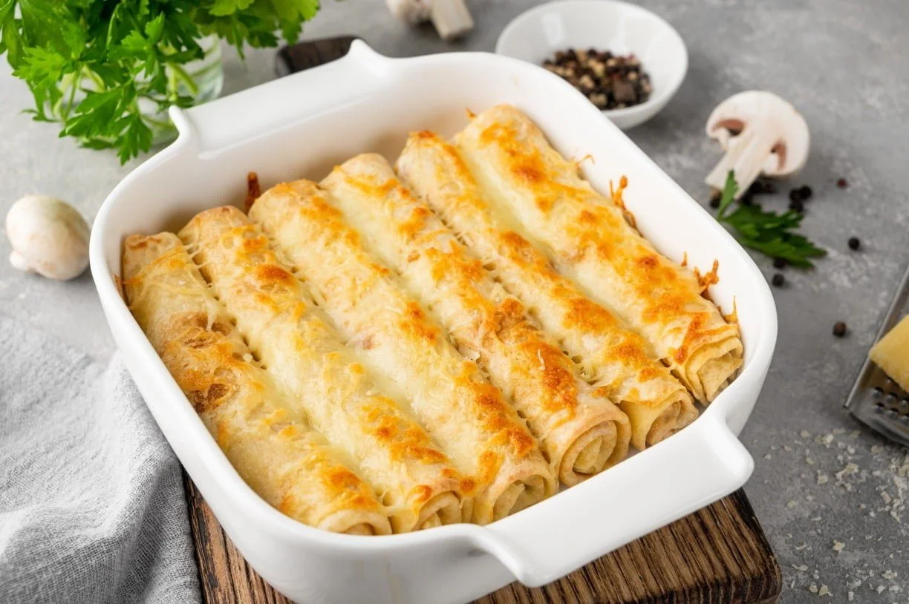

Panqueca de Frango com Requeijão
Ingredientes
- Massa:
- 1 ovo
- 1 xícara de leite
- 1 xícara de farinha de trigo
- 1 pitada de sal
- Recheio:
- 1 xícara de frango desfiado
- 2 colheres de sopa de requeijão
- Sal e temperos a gosto
- Molho:
- 1 xícara de molho de tomate
- Queijo ralado para gratinar
Utensílios Necessários
- Liquidificador
- Frigideira
- Tigela
- Assadeira
- Forno
Modo de Preparo
-
Passo 1
Bata os ingredientes da massa no liquidificador.
-
Passo 2
Aqueça uma frigideira untada e faça discos finos com a massa.
-
Passo 3
Misture o frango com o requeijão e recheie as panquecas.
-
Passo 4
Enrole, arrume na assadeira, cubra com molho e queijo.
-
Passo 5
Leve ao forno a 200°C por 15 minutos.
Informações Nutricionais (por porção)
| Nutriente | Quantidade |
|---|---|
| Calorias | 400 kcal |
| Proteínas | 20g |
| Carboidratos | 35g |
| Gorduras | 20g |